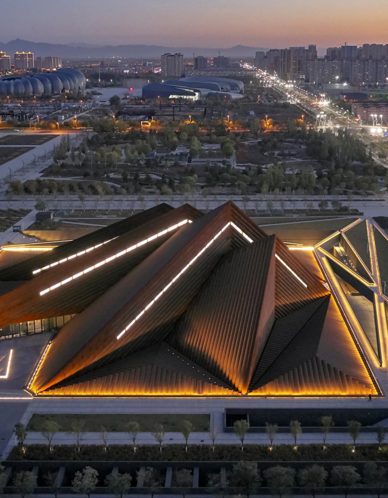
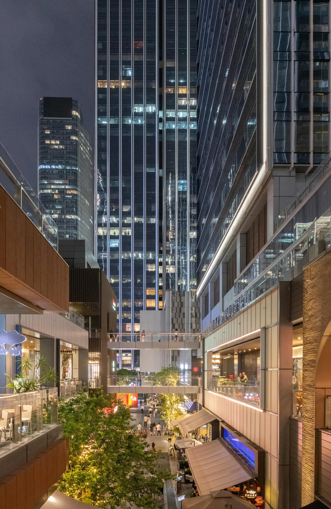

Archive
30 years of architecture at a glimpse. Please explore.
Lusail Towers
Qatar2022

Datong Art Museum
Datong, China2022

Zayed National Museum
Abu Dhabi, UAE2021
Southern Dunes
Saudi Arabia2022
Heart Center
Cairo, Egypt2017
Galeries Lafayette
Luxembourg City, Luxembourg2019
Fine Arts Museum
Bilbao, Spain2015

Technology Finance City
Shenzhen, China2017 Idea
New Centre
Hangzhou, China2015 Idea
Marina Tower
Athens, Greece2013